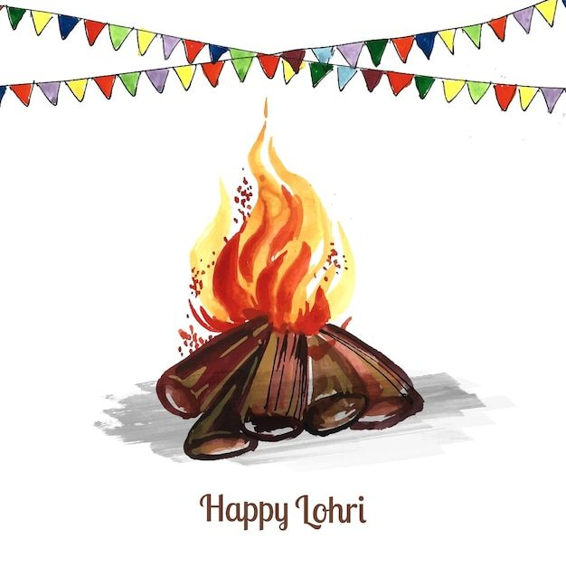

Lohri
Lohri is a popular winter dogra and punjabi folk festival celebrated primarily in Northern India. It marks the end of the sowing season of winter crops and makes way for a good harvest season
